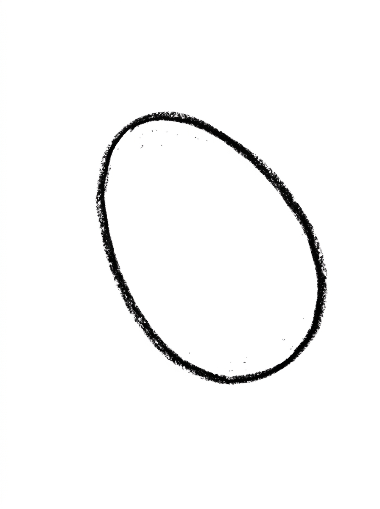
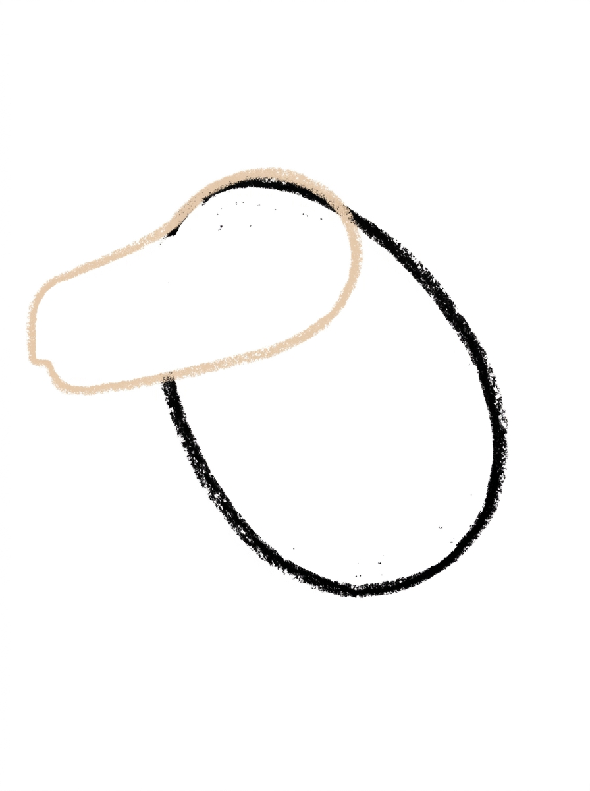
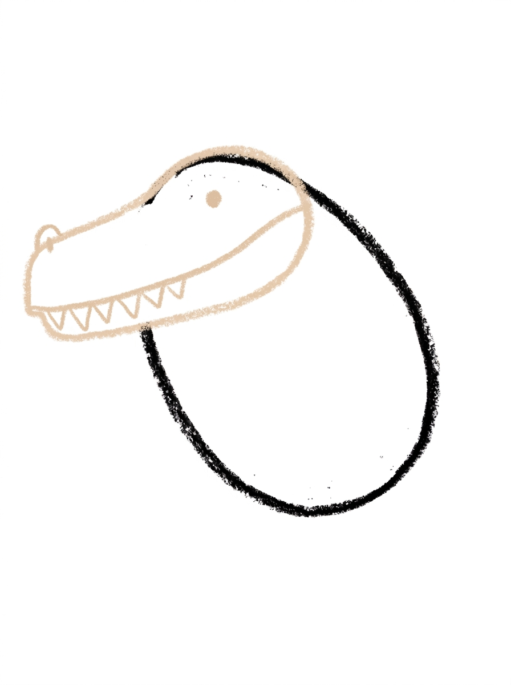
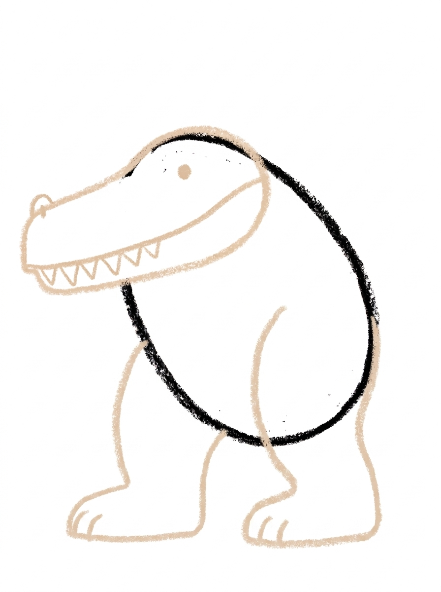
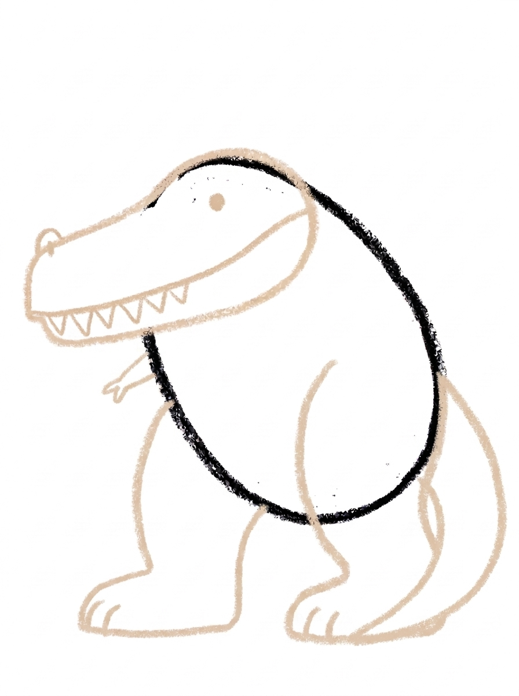
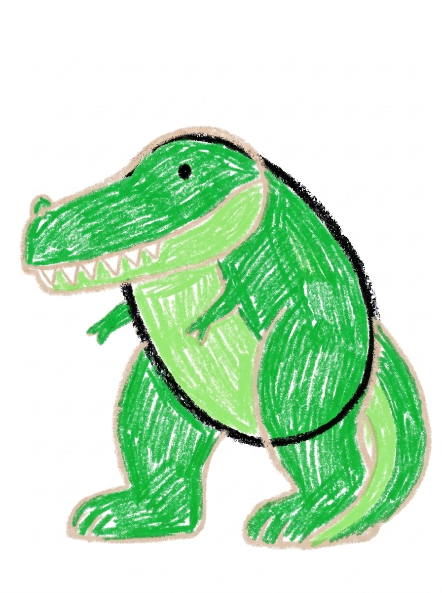

T-Rex Drawing for Kids How to Draw A T-Rex in 6 Easy Steps
Quick Answer
Draw a T-Rex in six easy steps: a tilted oval body, a huge long head, a jaw with pointy teeth, two massive legs, a tiny two-finger arm, and a long tail. Color it bright green with white teeth. Made for ages 3 and up — no signup needed, just print and draw.
At a Glance
- Subject: How to draw a t-rex
- Ages: 3+
- Steps: 6 steps
- Time: ~15 min
- Difficulty: Easy
- Supplies: Paper, crayons
A T-Rex is a dinosaur of extremes — a huge head, massive legs, and famously tiny arms. This tutorial leans into exactly that, building the dinosaur from one tilted oval so it looks powerful without ever getting hard to draw.
✏️ Draw Your T-Rex in 6 Easy Steps
One step per box — this step by step t-rex drawing shows each new part in a different color so kids can see exactly what changed.
Step 1: The Body

Draw one big oval tilted diagonally, leaning forward — that's the T-Rex's powerful body.
Step 2: The Huge Head

Add one huge long head at the top of the body — longer than it is tall, with a wide squared-off snout.
Step 3: The Jaw, Eye, and Teeth

Draw a long jaw line along the lower part of the head, one eye dot, a small nostril bump, and a row of pointy teeth hanging down from the mouth line.
Step 4: The Big Legs

Add two massive hind legs under the body, each with a big flat foot and toe lines.
Step 5: The Tiny Arm and Long Tail

Add one tiny little arm with two fingers just under the head, and one long thick tail sweeping out behind the body to a point.
Step 6: Color It In

Color your T-Rex! Bright green for the body, head, legs, and tail, lighter green along the belly, white teeth, and a black eye. Great drawing!
📊 T-Rex Drawing by Age
Every age can join in — just adjust the job.
| Age | What they can do | Tip |
|---|---|---|
| 3-4 | Draw the tilted body oval and color the finished T-Rex bright green. | The tilt is the trick — lean the oval forward like the dinosaur is mid-stomp, and even step 1 already looks alive. |
| 4-5 | Add the huge long head, the jaw line with its row of teeth, and the two massive legs. | Teeth hang from the mouth line, points down — teeth sitting under the line on the chin is the classic mix-up to watch for. |
| 6+ | Finish all six steps, including the tiny two-finger arm and the long tail tapering to a point. | Let older kids make the tail sweep low and long behind the body — it's what balances the forward lean of the head. |
🖨️ Download Your Free T-Rex Drawing Printable
The printable lays out all 6 steps one per box, big enough for little hands — kids draw right alongside each step.
⬇️ Open Free Printable 🖨️ Print🎁 Free printable for ages 3+
🦖 T-Rex Stomp Story
Give your T-Rex a world to stomp through: draw a row of big three-toed footprints leading up to it, a volcano or jungle trees behind it, and something small for it to look at — a tiny dinosaur, a butterfly, a sandwich. Then decide together what this T-Rex is really like: the scariest stomper in the valley, or a gentle giant who just wants a friend small enough to talk to. Write one sentence about it under the drawing (or dictate it for a grown-up to write).
What You'll Need to Draw A T-Rex
All you need is a pencil, an eraser, and crayons or markers. For the colors in the tutorial, have bright green ready for the body, head, legs, and tail, a lighter green for the belly side, white for the teeth, and black for the eye. Regular printer paper or a sketchbook both work.
What They're Learning
This tutorial practices drawing an oval on a tilt, judging length (a head longer than it is tall), and proportion contrast — making some parts huge and one part tiny on purpose. Kids also repeat a triangle shape for the row of teeth, taper a thick line to a point for the tail, and sequence a multi-part figure in a sensible order.
Make It Yours
Try a baby T-Rex with the same steps drawn smaller and a rounder head, a T-Rex with stripes along its back and tail, a volcano scene with the T-Rex stomping away from the lava, or a friendly T-Rex holding an ice cream cone in its tiny arm — the two fingers are just right for it.
🛒 Our Favorite Drawing Supplies
These are the supplies we reach for in our own home — washable (because kids), quality paper, and enough colors to avoid fights.
As an Amazon Associate, MomYouNeedThis earns from qualifying purchases — at no extra cost to you.
💡 T-Rex Drawing Tips for Parents
Step 2 is where T-Rex drawings are won or lost: kids almost always draw the head too small. Coach 'longer than it is tall' and let the head be almost comically big — a T-Rex head should look too big for the body. If the head comes out small and round, the dinosaur reads as a frog, and no amount of teeth will rescue it.
At step 3, watch the teeth: their bases sit on the mouth line and the points hang below it, inside the mouth. Teeth drawn floating under a separate line on the chin is the classic error. And at step 5, keep the arm truly tiny — kids want to 'fix' it bigger, but tiny is the whole point, and it's the part their friends will laugh about in the good way.
🦖 T-Rex in the Real World
Tyrannosaurus rex lived about 68 million years ago in what is now North America, and it was one of the largest meat-eating dinosaurs ever to walk the Earth. Its head alone was as long as a grown-up is tall, and its teeth were thick, jagged, and about the size of bananas — built for crunching through just about anything.
For such a giant, its arms were famously tiny, each with just two fingers. Everything scientists know about T-Rex comes from fossils — bones turned to stone and dug up piece by piece. Ask your child: if their T-Rex left a fossil behind, what would future scientists guess about it?
✋ Warm-Up: Teeth Rows and Big-Small Practice
Warm up with the T-Rex's best feature: teeth. Draw a wavy line on scrap paper and hang a row of triangles under it, then try a second row with the triangles pointing up. Zigzag rows are pure T-Rex. Follow with a big-and-small game — one enormous circle, one tiny circle beside it — because this whole drawing plays with huge parts next to tiny ones.
Proportion slips are the expected mistake here, and they are easy to forgive: a head that comes out small can be fixed by drawing a bigger head right over the first lines, dinosaur-style. Fossils get reconstructed all the time; drawings can too.
📖 Give Your T-Rex a Story
Every T-Rex needs a reason to stomp. Is yours hunting, hatching, roaring at a storm, or just very, very hungry before lunch? Have your child dictate the story in two sentences and write them under the drawing — stomping dinosaurs with captions are refrigerator-door gold.
When the story needs a second character, the dinosaur tutorial is the natural sequel: a long-necked neighbor for the T-Rex to meet. Kids who draw 'the next page of the story' practice far more willingly than kids who are just told to practice. Build the dinosaur park with the classic how to draw a dinosaur, then add a storybook cousin in how to draw a dragon.
❓ T-Rex Drawing FAQs
What is the easiest way to draw a T-Rex?
Start with one big oval tilted forward for the body, then add the parts that make a T-Rex a T-Rex: a huge long head, a jaw with pointy teeth, two massive legs, one tiny arm, and a long tail. Big head, big legs, tiny arms — get those proportions and the dinosaur draws itself.
What age is this T-Rex drawing for?
It's made for ages 3 and up. The body and head are simple ovals, and younger kids can do the body, head, and coloring while older kids add the teeth, legs, and tiny arm themselves.
What supplies do we need?
A pencil, an eraser, paper, and crayons or markers. For colors you'll want bright green, a lighter green for the belly, white for the teeth, and black for the eye.
Is the printable really free?
Yes — every printable on MomYouNeedThis is 100% free, including this T-Rex drawing tutorial. There is no signup, no email, and no catch — just download, print, and draw.
How do I print it?
Open the PDF and choose Print, then set the scale to 100% (sometimes called Actual Size) so the steps print at full size. The tutorial is designed for regular US Letter paper, and plain printer paper works perfectly.
Why are the T-Rex's arms so tiny?
Because real ones were! A T-Rex's arms were about the size of a grown-up's arm on a body as long as a bus. This drawing plays that up — one tiny two-finger arm under the head, with a second, smaller arm just visible behind it.
How do I draw the T-Rex's teeth?
The teeth hang down from the mouth line like a row of little triangles — bases on the line, points below it, inside the mouth. Keep them on the line itself; teeth drawn under a separate chin line is the most common T-Rex mistake.
Can my T-Rex be a different color?
Absolutely — nobody has ever seen a real T-Rex's skin color, so your child can't get it wrong. Try a purple T-Rex, a red one, or one with stripes along the tail. The huge head and tiny arms keep it a T-Rex in any color.
📚 Keep Exploring
- ✏️ All 74 Drawing Tutorials 74 free step-by-step drawing tutorials for kids.
- 🦖 Dinosaur Coloring Free dinosaur coloring pages for kids.
- ✏️ Drawing Practice Free printable drawing pre-writing worksheet for toddlers.